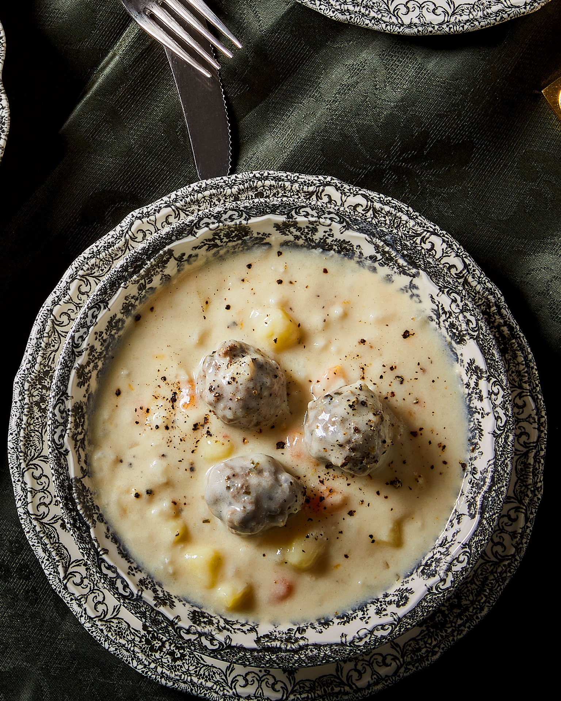

Yiouvarlakia Recipe!
Home

Description
Yiouvarlakia is a beloved Greek comfort food, consisting of tender, hand-rolled meatballs made with a mix of ground meat and rice, simmered in a savory, aromatic broth. This traditional dish is finished with the iconic "avgolemono" sauce—a silky, velvety emulsion of eggs and fresh lemon juice that gives the soup its signature creamy texture and tangy, bright flavor. It is a hearty, wholesome meal that perfectly captures the warmth of home-cooked Greek cuisine, offering a beautiful balance between the savory meat and the refreshing citrus notes of the sauce.
Ingredients
Meatballs
- Minced meat: 500g ground beef or a mix of beef and pork
- Rice: 1/2 cup medium-grain rice (rinsed)
- Herbs: 1 bunch fresh dill and parsley, finely chopped
- Onion: 1 medium onion, grated
- Egg: 1 egg (for binding)
- Olive oil: 2 tbsp and salt/pepper
Soup Base
- Water or Broth: 1.5 - 2 liters
- Vegetables: 1 carrot (sliced) and 1 small onion
- Olive oil: 2-3 tbsp
Avgolemono Sauce
- Eggs: 2 large eggs
- Lemon: Juice of 1-2 lemons
- Broth: A ladle of the hot soup liquid
Steps
- Prepare the mixture: In a large bowl, combine the minced meat, rinsed rice, chopped herbs, grated onion, egg, olive oil, salt, and pepper. Knead well until the ingredients are fully incorporated.
- Form the meatballs: Wet your hands with water and roll the mixture into small, even-sized balls (about the size of a walnut).
- Boil the broth: In a large pot, bring the water (or stock) to a boil with the carrot, onion, and olive oil.
- Cook the meatballs: Carefully drop the meatballs into the boiling broth. Lower the heat, cover, and simmer for about 30-40 minutes until the rice is cooked and the meat is tender.
- Prepare the Avgolemono: In a separate bowl, whisk the eggs until frothy, then slowly whisk in the lemon juice.
- Temper and thicken: Take a ladle of the hot broth from the pot and slowly pour it into the egg-lemon mixture while whisking constantly to prevent the eggs from scrambling (tempering).
- Combine and serve: Pour the mixture back into the pot, gently swirl the pot to incorporate, and cook for 1-2 minutes on very low heat until the soup thickens slightly. Serve immediately while hot!